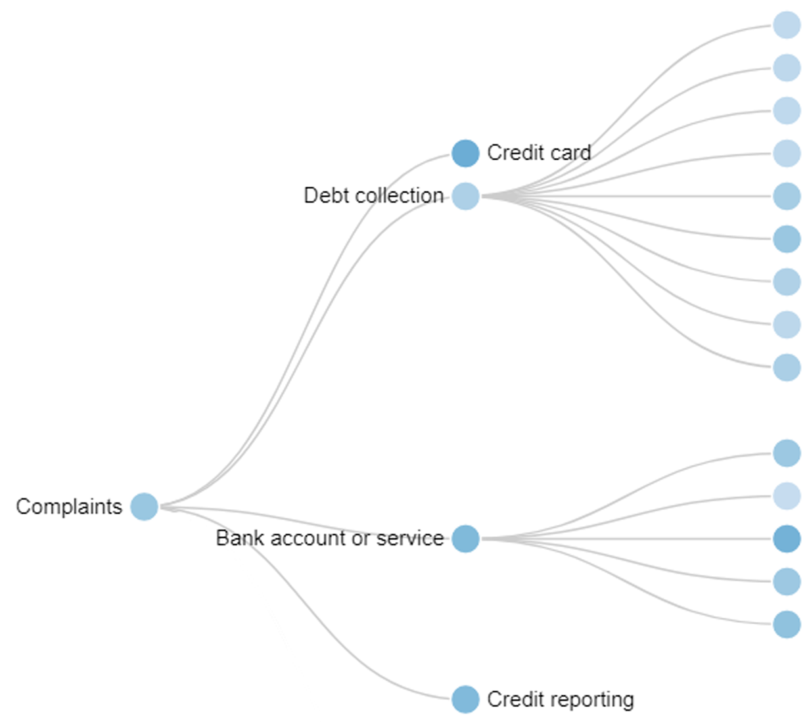

Chapter 5. Single Views
It does not necessarily take a sophisticated visual representation to make a compelling point or understand a complex dataset. Many of the most discussed, most viral, and most interesting visualizations are based on basic chart types. In this chapter, we’ll take a look at some of the familiar core chart types. This is well-trodden territory—a sample of some different approaches can be found in “Further Reading”, including attempts to taxonomize the space in different ways.
This chapter takes a somewhat different approach to organizing core chart types. It is organized around the things that the analyst knows, and wants to know, about the data. This follows from the process of operationalizing the data (Chapter 2), interviewing users (Chapter 3), and understanding the data’s shape and the actions we can take with it (Chapter 4). The operationalization has helped reveal something about how the data is structured and what questions there are about it. This knowledge can be used to select chart types based on specific data questions.
Depending on the analyst’s task and question, visualizations can emphasize different results from the same dataset. For example, the United States Consumer Financial Protection Bureau (CFPB) has released information about consumer complaints and how they were resolved across a number of different financial products. Among other columns, the data describes the class of financial products to which a complaint applies and the type of relief that the complaint received. The examples in the following figures aggregate that data to just three dimensions: the product, the number of claims that had some form of relief, and the number of claims that did not.
Different chart types support different types of questions. If the analyst wants to see how two different groups compare relative to each other, a scatterplot (Figure 5-1) might be an appropriate choice. If the numbers are components of a larger value, they can be added together to get a stacked bar chart (Figure 5-2). Conversely, to compare the numbers to each other, the analyst might choose a clustered bar chart (Figures 5-3 and 5-4).

Figure 5-1. A scatterplot emphasizes the relationship between cases that received relief and those that did not for five different products.
Figure 5-2. A stacked bar chart emphasizes the total number of complaints.
Figure 5-3. A clustered bar chart emphasizes the contrast between the number of people who requested relief and those who attained it.
Figure 5-4. A different clustering emphasizes the different sizes of the populations who didn’t receive relief (and the similarity of those who did).
The list of visuals in this section can never be exhaustive, and new chart types are being created all the time. This set, however, addresses many of the major categories and the vast majority of charts found in the wild. The list of charts is arranged by a set of common data questions according to which they are most effective at supporting.
This chapter first gives a quick primer of perceptual concepts that underlie the construction of these basic charts. After that, the charts are organized by data question. An overview of that organization is shown in Table 5-1. The language here is intentionally informal because it is meant to work as a reference for helping to map an operationalization to visualization solutions.
Table 5-1 uses the data types from “Types of Data”. C is for categorical, Q for continuous (quantitative), and O for ordinal data. V represents any data type that can be mapped to a drawing attribute, like color or line thickness. If a drawing supports Q×Q, that means it supports a dataset with two continuous columns.
| Section | Chart and data types | Figure thumbnail(s) |
|---|---|---|
Histograms and joint distributions C, Q, Q×Q, Q×C, C×C |
||
Bar charts, pie charts C×Q, C×O, C×C×O |

|
|
Scatterplots and heatmaps Q×Q, Q×Q×V(×V…) |
||
Line charts Q×O, Q×C×O |
||
“Question: How Are Objects Related to Each Other in a Network or Hierarchy?” |
Network visualizations Network (×V…) on nodes and edges |
|
Tree visualizations Network (×V…) on nodes and edges; Network×Q×V on nodes |

|
|
Map visualizations Map×V; Locations×V(×V…) |

|
|
Text visualizations, including word clouds |

|
Overall Perceptual Concerns
The strengths and weaknesses of human perception drive much of the design of visualizations. Basic perceptual concepts apply across all visualization types. The term encoding channel refers to the ways that an attribute is represented in the visualization. In a bar chart, for example, bar length encodes a value, whereas the textual bar caption encodes the category. Different channels have very different perceptual properties, which can be described in terms of how quickly and accurately a reader can interpret them as well as how much they stand out from each other.
There is a well-known hierarchy of accuracy: overall, readers are faster and more accurate when comparing lengths or positions than area (see Figure 5-5). Roughly, the hierarchy runs from length to arc angle, to area to color hue and intensity (Figure 5-5). All else being equal, then, bar charts (which use length) are likely to be preferable to treemaps, which use area. (To read more on this topic, see the article by Cleveland and McGill cited under “Relevant Articles”.)
Figure 5-5. Difficulty in comparison increases roughly from left to right: comparing length with a shared baseline and with different baselines, comparing angles, comparing square areas or circular areas, and comparing color. Each of these shows three values in the proportion 5:1:3.
Color is difficult to use effectively. A small number of well-chosen colors can be highly distinguishable, particularly for categorical data, but it can be difficult for users to distinguish between more than a handful of colors in a visualization. Nonetheless, color is an invaluable tool in the visualization toolbox because it is a channel that can carry a great deal of meaning and be overlaid on other dimensions. A number of the visualizations described in this chapter use a color scale, such as heatmaps and choropleths. There are a variety of perceptual effects, such as simultaneous contrast and color deficiencies, that make precise numerical judgments about a color scale difficult, if not impossible. As such, it is vital to choose color palettes with care.
There are other important conventions. Lines should connect things that go together, and in most cases, it should be meaningful to look halfway along a line. Objects in visualizations that are stacked atop each other are typically read as to be summed together: their total area is the sum of the areas of their components (Figure 5-2). This is as true in a stacked bar chart as it is in a treemap. Conversely, when areas are discontinuous—two different bars side by side—the analyst expects the viewer to compare them. Closer-together things are easier to compare than further-apart things; thus, a clustered bar chart suggests that the bars in each cluster should be considered in relation to each other, and then the clusters themselves in relation to one another (Figures 5-3 versus 5-4).
None of the data visualizations in this chapter use a three-dimensional perspective. There is an entire research area dedicated to 3D data—physical structures, bodies, weather systems—and many tools meant to visualize things that truly have three spatial dimensions. In our experience and in the experience of many others, using three dimensions tends to lead to challenges in perception: points in space occlude each other; perspective makes it hard to compare sizes; the extra dimension of depth tends to obscure information. Thus, visualization design principles tend to reserve 3D visualization techniques to tasks that are meant to explore the 3D shape of spatial data.
There are a number of excellent resources on the topic of perception for visualization; see “Further Reading”.
Question: How Is a Measure Distributed?
In this section, we start with a single variable and look at ways to examine how it is distributed. There are a group of subquestions around distributions. Are there some values that recur? Are there outliers? This first class of visualizations is meant to help us understand the distribution of one or two data columns.
Histogram (Categorical)
Figure 5-6. Categorical histogram. One categorical variable. This chart shows the distribution of car styles in the cars dataset.
- Description
-
This is a Categorical × Ratio chart, which can be drawn as a bar chart. Given a list of categorical data, each bar represents the frequency of items in a particular category. Subquestions center around comparing bars: What category has the most, or the fewest, items? Does some category stand out from the others?
Histogram (Quantitative)

Figure 5-7. Quantitative Histogram. One quantitative variable. This chart shows the distribution of car ratings for the city-mpg field.
- Description
-
A quantitative histogram shows the distribution of a continuous or ordinal variable. It can help identify whether the data is skewed in one direction or another—that is, whether the data is top-heavy or bottom-heavy, or whether there are gaps in the middle of the range or outliers at the end. If there is a small enough number of discrete values, they can be treated as categories. Otherwise, the data is binned into ranges and each range gets its own bar. It is valid for a bin to have no items.
This chart is not really different from the categorical histogram. Fundamentally, it follows the instructions in “Transforming Between Dimension Types” to transform a continuous variable into an ordinal one by binning, then aggregating on the count within the bins.
- Limitations
-
The effectiveness of the histogram is based on the effectiveness of the binning. Different choices of bins—varying where the bins start or the bin size—can produce very different-looking results for the same data.
Smoothed Histogram
Figure 5-8. Smoothed histogram. One quantitative variable. This plot shows a kernel density estimate of the city-mpg field of the cars dataset. Smoothed with a narrow bandwidth, the dataset shows sharp peaks. Smoothed with a wider bandwidth, the dataset shows a gaussian-like distribution.
- Description
-
A histogram can be smoothed into a continuous curve, known as a probability distribution function. Applying a smoothing function implicitly suggests that the underlying data is smooth, and that the data points are a sample drawn from a broader set of possibilities. Like binning functions, smoothing functions are extremely sensitive to parameters and algorithms.
- Limitations
-
The smoothed histogram entirely hides the underlying values, and the y-axis can be difficult for users to interpret. Contrast Figures 5-7 and 5-8, which are drawn with the same data.
Box Plot
Figure 5-9. Box plot. One continuous variable, conditioned on one or more categorical variables; this chart shows the variation of the city-mpg field, this time across multiple car body styles.
- Description
-
A box plot shows a less detailed summary of a single distribution. At the cost of detail, users can more easily glance at how distributions differ. The box plot family allows you to compare multiple distributions against each other. It can identify such features as the average, standard deviation, and outliers for multiple distributions. Figure 5-9 shows a common use of box plots: to compare one measure across multiple dimensions.
A box plot is computed by choosing series of aggregate values over the distribution—usually the median and the quartiles—for the continuous variable. Other implementations choose instead to render the mean and standard deviations of a distribution.
- Limitations
-
A box plot cannot show multiple peaks or other features of the distribution; it also hides the underlying number of entries. Some box plots can render outliers, although this does not scale to large numbers of points. Other variants, such as the whisker, bean, and violin plots add additional richness to the box plot (see “Further Reading”).
Density Plot for Two Dimensions
Figure 5-10. Categorical density plot. Two categorical variables. This chart shows the number of cars, grouping body style by make.
Figure 5-11. Continuous density plot. Two continuous variables. This chart shows the joint distribution of efficiency, as measured in MPG, against the weight of the car.
- Description
-
The density plot shows how two variables change together. Darker spots show places where lots of points occur; lighter spots show places where there are fewer points. Density plots can be used to compare relative distributions between two different variables, as well as to find outliers. In the categorical version, it can be used to find how often different pairs of variables go together.
As in a histogram, continuous variables are bucketed. Each cell contains the number of items in which a pair of values co-occur. A density plot may also plot a continuous versus a categorical variable.
- Notes
-
The density plot is a first cousin to the more familiar scatterplot. Where a scatterplot shows individual points, however, a density shows regions. As a result, density plots are far more scalable than scatterplots. At a large number of points, a scatterplot can become a black blob, whereas a density plot can be tuned. Density plots come in many variants, including ones that highlight individual outliers, ones that use smooth curves to show density, and ones that choose non-square binning algorithms (see “Further Reading”).
Question: How Do Groups Differ from Each Other?
The second major group of questions are those that compare multiple groups. Are boys taller than girls? Do people buy more chips or soda? When data values are broken out by categories, the visualizations in this section can show how the values of those categories compare.
Bar Chart
Figure 5-12. Bar chart. One categorical variable, one ordinal. Bar length shows the average efficiency by body style using the same data as in Figure 5-9.
Figure 5-13. Paired (or multiple) series bar chart. One ordinal, two categorical variables. Efficiency by body style is now divided into diesel versus gas cars.
- Description
-
A bar or column chart is a common choice for comparing a single measure per group. A clustered bar chart provides two categories: a major one and a minor one. The task, then, can be more complex: users might compare bars within a cluster or between clusters, or compare the overall shapes of clusters to each other.
The bar chart is useful for comparing values across categories. Users are very good at tasks like mentally sorting bars, identifying extremes, and estimating the average and variance across bars.
- Notes
-
Bars should be ordered in some reasonable order. If the categorical value is based on ordinal data—such as years—then they should be in that order. Otherwise, bars can be ordered from highest to lowest value. In a multiple-view or clustered bar chart, the order should remain consistent.
When a dataset is separated across a categorical variable, each category is sometimes referred to as a series; in a multiline chart or a clustered bar chart, each line or bar represents a series.
- Limitations
-
A bar chart begins to be incomprehensible when there are too many categories, except in the case where the bar chart is showing individual values of bucketed, sequential data. If the task is to cluster pairs of bars into groups based on their relative size, then a scatterplot (Figure 5-16) might be a more appropriate tool.
Pie Chart
Figure 5-14. Pie (or doughnut) chart. One continuous, one categorical variable. The CFPB data shows the ways that complaints have been closed.
- Description
-
A pie (or doughnut) chart is a variant on a bar chart: it maps wedge angle instead of height to a value. By filling a full 360 degrees around, the pie connotes parts of a whole. Pies can be effective for showing certain aspects of the data: this takes up more than half, for example. It can be difficult, however, to accurately compare pie wedges to each other unless they are very different in size.
Heatmap
Figure 5-15. Heatmap. Two categorical or continuous variables result in a color variable. The CFPB data shows the number of complaints over time, by product. The data is broken out by month and year.
- Description
-
A heatmap is a two-dimensional analogue to a bar chart: it visualizes the aggregation or value that sits in each bucket. Just as a bar chart is a general mechanism that can be used to render a histogram, the density plot shown in Figure 5-15 is rendered with a heatmap. Many tasks that are carried out with a heatmap might also be fulfilled with a clustered bar chart.
A heatmap allows the user to look across or down the dimensions, looking for commonalities or differences. For example, in Figure 5-15, the user can look across to see patterns in how products are similar or vary, and up to see how company responses vary.
- Notes
-
A heatmap is a first cousin of a density plot, except rather than using merely the count of items, it shows a measure. The term heatmap gets used in many contexts; this use is common, but not exclusive. The term can also refer to density plots, for example, and occasionally to treemaps.
- Limitations
-
When a heatmap has many rows or columns, it becomes important to order them to show patterns and trends. Furthermore, dense heatmaps suffer from a host of perceptual problems associated with color, making accurate judgments of individual values sometimes impossible.
Question: Do Individual Items Fall into Groups? Is There a Relationship Between Attributes of Items?
Scatterplots fulfill two sets of closely related tasks. By visualizing items by their attributes, they can help us look at relationships between those attributes or at groupings in the items themselves. Is there a relationship between height and weight? Do mobile users differ from desktop users with regard to session length or click-through rate?
Scatterplot
Figure 5-16. Scatterplot. Two continuous variables. Additional continuous, ordinal, or categorical variables can be added for size, color, and shape. This shows the relation between curb weight and MPG for five different styles of car.
- Description
-
A scatterplot places data points on perpendicular axes. The two major axes are used to lay out the points spatially; additional attributes can be used for color, size, or shape.
Scatterplots encourage the user to look at groupings in space. They can identify outliers or groups, such as the points that are in each cluster or the points that are along a main trendline. If the points are colored with an additional categorical variable, then they can address questions about whether different categories behave differently from each other.
- Notes
-
Too many simultaneous encodings will be overwhelming to the reader; colors must be easily distinguishable, and of a small enough number that the reader can interpret them.
Many users find scatterplots difficult to interpret with their two abstract axes. In an infographic, some designers help guide users by highlighting and annotating regions with comments like “People who had high math scores but low written ones,” or individual points with comments like “This drink costs $0.50 and has 150 calories.”
- Limitations
-
When encoding a third dimension with color or shape, occlusion can get in the way: a user cannot see that a red dot and a blue dot have been drawn in the same place. Also, some tools will draw all of one set of points before they draw any of the next; the reader can be misled by this unintentional bias.
Question: How Does an Attribute Vary Continuously?
Temporal data occurs in almost every context, so line charts are some of the most common forms of charts. How is a stock, a heart rate, or Twitter traffic doing compared to last month? Is the trend periodic, trending, or noisy?
Line and Area Charts
Figure 5-17. Line chart. One ordinal, one continuous variable. This chart shows a count of consumer complaints by year and month for the CFPB data.
Figure 5-18. Stacked area chart. One ordinal, one continuous, and one categorical variable. This chart shows the count of consumer complaints, like Figure 5-17, but broken out by product. Mortgages stabilized while credit reporting grew (this shows the same data as Figure 5-15).
- Description
-
The line chart family draws a value for each point along a continuous axis. The independent axis is often time, but it can be anything that varies continuously, such as distance. For points that are not in the dataset, the chart shows an interpolated value; a core assumption of a line chart is that the points in between are meaningful and well defined.
A line chart shows change over a continuous variable. That might be a trend (Profits went up!) or a repeating pattern (People read our web page on weekends! This bike ride is hilly!). Use multiple lines sharing one set of axes to see how multiple sets covary.
A stacked line chart lays multiple lines over each other with the top of one acting as the baseline of the next.
- Limitations
-
In any stacked chart, it can be difficult to see how much the upper layers have changed. In Figure 5-18, for example, the spike in the bottom green layer in January 2013 makes it appear that all categories spiked.
Question: How Are Objects Related to Each Other in a Network or Hierarchy?
Networks and hierarchies help track the connections between items. Is this person connected to that one? Does this online group have an internal structure? How many people are in this reporting structure? Which product line is selling best?
Node-Link View
Figure 5-19. Node-link view. A relational variable, in which pairs of data values are linked to each other, plus additional metadata on the nodes and edges. This data from the Les Miserables dataset shows coappearance in the novel between characters. The network has been truncated to 40 nodes for legibility.
Figure 5-20. Circular network layout. A relational variable, in which pairs of data items are linked to each other, plus additional metadata on the nodes and edges. This shows the same data as Figure 5-19.
- Description
-
A node-link view draws nodes representing data items, and lines representing links between them. In a force-directed layout such as Figure 5-19, nodes and lines are placed so that connected nodes are nearer each other, while nodes that are not directly connected are further apart; these views help users identify clusters of interconnected nodes. A circular layout like Figure 5-20 maintains an ordering between nodes.
Node-link diagrams are good for understanding connection. A user may be able to pick out well-connected nodes, as well as identify clusters of nodes and isolates. In an ordered circular layout, it is easier to see similar nodes have similar patterns of connection. When an additional dimension is shown using color or shape, tracking homophily—whether well-connected nodes are similar with respect to the additional dimension—becomes possible
- Limitations
-
Node-link views are effective for showing only small networks. Researchers have found that the most successful node-link diagrams showed small networks with no more than 10–50 nodes and 20–100 links. At this scale, node-link diagrams are good at showing the overall structure of a sparse graph, although density has a strong impact on readability—a highly connected graph can lead to what’s known as a hairball. A very few, far larger networks visualized using node-link views have been successful in presenting the general shape of the network. (See “Further Reading”.)
Rendering node-link view layouts is a research field in its own right, based on what types of tasks will be supported by the visualization. Consider aggregating groups of nodes together to see relationships between them, or providing a drilldown into regions.
Adjacency Matrix
- Description
-
An adjacency matrix shows the connections between data items in a heatmap, where the measure is whether a pair of items are connected.
The adjacency matrix shows connection between pairs directly; each cell represents an edge. Identifying whether a pair of items is connected is a straightforward task, but pathfinding is more difficult. In addition, with an appropriate ordering, cliques and near-cliques become visible.
- Notes
-
An adjacency matrix can be more difficult for novices to understand than a node-link diagram. For smaller and sparser networks, a node-link diagram is almost always better. Detecting patterns is very order-dependent; much research has been done on ordering the cells in a matrix in order to bring out patterns.
Adjacency matrices are not a particularly compact representation; the fairly small matrix in Figure 5-21 still takes up a large amount of space.
Tree View
Figure 5-22. Tree view. One hierarchical set of dimensions, perhaps coded with one or two other dimensions (both nodes and edges can be colored and sized). This is a hierarchy of the types of complaints to the CFPB and the percentage of them that received relief. The second layer of the tree corresponds to the values in Figures 5-1 through 5-4.
- Description
-
A tree view uses a node-link diagram to draw a hierarchy. The color of nodes and edges, as well as the thickness of edges, can be mapped to additional dimensions of the dataset. As such, a tree view is good for looking for individual items buried in a hierarchy that are unusual in size or color.
- Notes
-
When trees get large, it can be difficult to pick out individual nodes. In interactive systems, it can be convenient to collapse subtrees together into abstracted nodes, and to elide nodes toward the roof. This sort of level of detail interaction allows users to more easily navigate the tree.
Treemap and Sunburst
Figure 5-23. Treemap. A hierarchical value, associated with a size and a color for each leaf node. Non-leaf nodes do not get their own colors. This represents the same data as Figure 5-22 but adds a second dimension for size: the number of complaints.
Figure 5-24. Sunburst plot. A hierarchical value, associated with a size and color for each node, including both leaf and internal nodes. This chart shows the same data and mapping as Figure 5-23.
- Description
-
Treemaps and sunburst plots look at relative sizes of things in a hierarchy. For example, a hard drive has folders that each take up space, subfolders take up fractions of their space, and so on. Similarly, a company might organize its products in a hierarchy (categories of products, divided into individual products, divided into editions). Each node is associated with both a size and a color. As with the tree view, color can be mapped to a value or category, but it is far easier to read the total area than with a tree view.
A sunburst plot can make it harder to compare the size of areas, especially between layers, but easier to compare the depth.
- Limitations
-
It can be difficult to accurately compare relative area in these visualizations, especially for oddly shaped pieces or between different layers.
Question: Where Are Objects Located?
Maps are perhaps the most familiar visualizations: many children grow up playing with map puzzles many years before they encounter their first bar chart. As such, they make familiar reference points to place data. Which state has the most millionaires? Where are the stores that have sold the most snow shovels?
Geographical Map
Figure 5-25. Choropleth. Values correspond to regions, such as states or counties. This chart uses census data to look at the percentage of the population with income over $200,000.
Figure 5-26. Dotplot map. A scatterplot, where the x- and y-axes are geographical (or a list of geographical points); additional dimensions for size, color, or shape. Dots are located at the centroid of each zip code; the first digit encodes color.
- Description
-
Geographical visualizations are an entire field in themselves. The choice of choropleth and dotplot here represents just two classic charts from an extremely rich history. Choropleths fill in regions; dotplots place data at points of interest.
Maps can be used for understanding how places vary or are similar, for understanding regional differences, and more.
- Notes
-
One great virtue of maps is that if the audience is reasonably familiar with the area, there is no actual need to label what the space means. Neither Figure 5-25 nor 5-26 has a legend or labels on the states, which is a reasonable omission for people familiar with the geography of the United States.
- Limitations
-
In a choropleth, a great deal of emphasis is given to land area even though size and population are unrelated—a high value in US states like Alaska or Montana (which have a very large area but a low population) might seem more significant than a high value in tiny Rhode Island (which has approximately the same population as Montana, but 1/145 of the land mass).
The spatial distribution of dots in a dotplot is the same, regardless of the dimension being shown with color. For example, most dotplot maps of the United States look somewhat the same: a lot of points on the East Coast, fewer on the West Coast, and fewer still in the center. This is true whether measuring number of millionaires, voters, or sinks sold.
Maps also have the disadvantage that they consume the most powerful encoding channels in the visualization toolbox—position and size—on an aspect that is held constant. This leaves less effective encoding channels like color for showing the dimension of interest.
Question: What Is in This Text?
Visualizing textual data is a common user need. Unfortunately, there is no definitive technique for resolving it. Most approaches fall into the same patterns that are discussed throughout this chapter. They can be found by operationalizing the question further: what is it that the analyst needs to know from the text? Some popular approaches start with counting patterns and frequencies of words or phrases and visualizing these patterns in line charts, bar charts, networks, and so on. There are many subtleties with regard to recognizing word roots and stemming, choosing what aspects to visualize, and handling a set of words with a very high cardinality.
Word Cloud
Figure 5-27. Word cloud. This is a word cloud of the text of the Preface to this book. Color in this chart is arbitrary.
- Description
-
One popular choice for visualizing text is a word cloud. A word cloud is, at heart, something like a bar chart: entities are sized to their counts. It relaxes constraints on position and color, which then get assigned with fairly arbitrary layout algorithms. A word cloud allows the reader to understand the relative frequency of words, and roughly identifies the top handful of words.
- Limitations
-
Perceptually, a word cloud can be challenging: long words, and letters with ascenders and descenders, can make size difficult to estimate. It might be more effective—if less visually interesting—to simply print a bar chart of word frequency.
Conclusion
This chapter has examined several major classes of visualizations. There are a set of shared encoding channels: the placement of items (spatial), color, size. There are also a number of perceptual rules used to help enhance the degree to which visualizations bring out distinctions in questions.
This ties back to the process of operationalization by linking the question to user needs. For example, imagine an analyst who wishes to create a visualization showing that stores in region A are more likely to sell blue jeans than stores in region B. The question that the data counseling process suggests to ask is, “What would it look like to show this?”
The analyst might decide to group stores together by region and show the sum of jeans sold, or the proportion of products. They might decide to plot them on a map. In the former case, they lose granularity (data on individual stores) at the gain of seeing overall trends. Plotting has the opposite effect: it may be hard to see trends against bigger population patterns.
Further Reading
The basic chart types are one of the most well-studied and explored areas of data visualization. This section highlights a (very) few core books:
Bertin, Jacques. Semiology of Graphics: Diagrams, Graphs, Maps, trans. William J. Berg (Redlands, CA: ESRI Press, 2010).
-
Jacques Bertin’s seminal volume is a dense and challenging read (and the English translation is imperfect). However, the work is a treasure trove. Bertin lays out the principles of good information design based on cartography, typography, color theory, and perception. He then walks through, in great detail, the advantages and disadvantages of different chart representations of datasets with qualitative, quantitative, and spatial data types.
Few, Stephen. Information Dashboard Design: Displaying Data for At-a-Glance Monitoring (Sebastopol, CA: O’Reilly, 2006).
-
Stephen Few takes an opinionated approach to creating information dashboards. In this book, he lays out basic principles of what makes for a good information dashboard. His notes apply both to the individual charts discussed in this chapter and the multiple views in Chapter 6.
Wilkinson, Leland. The Grammar of Graphics (Mew York: Springer, 1999).
-
This book expresses a particular sequence of creating visuals by mapping from data through geometric primitives and placing them on scales. These core insights make it easy to generalize many visualization techniques and have influenced visualization systems from Tableau, to the ggplot package in R, to Vega.
Meirelles, Isabel. Design for Information. (Beverly, MA: Rockport Publishers, 2013).
-
Trained as a designer, Isabel Meirelles presents the history and best practices for understanding, critiquing, and creating visualizations from a design perspective.
Steele, Julie and Noah Illinski. Designing Data Visualizations (Sebastopol, CA: O’Reilly, 2011).
-
This is a useful guide to core visualizations, with a stronger emphasis on how to design and present visualizations.
Munzner, Tamara. Visualization Analysis and Design (Natick, MA: AK Peters/CRC Press, 2014).
-
This textbook is an overview of the state of the art of the data visualization field. It covers data abstraction, provides perceptual guidelines, and discusses faceting into multiple views. Many topics in this book were influenced by Munzner’s approach.
Relevant Articles
Cleveland, William S. and Robert McGill. “Graphical Perception: Theory, Experimentation, and Application to the Development of Graphical Methods.” Journal of the American Statistical Association 79 (1984): 531–554.
-
This brief and readable journal article builds a hierarchy of core perceptual tasks in visualization. Its insight is that comparing length is the core perceptual task of a bar chart, whereas comparing angle is core to a pie chart. Comparing these two perceptual tasks can help evaluate the difficulty of understanding a visualization.
Wickham, Hadley and Lisa Stryjewski. "40 Years of Boxplots,” technical report from had.co.nz (2012)
-
This paper provides an invaluable overview of different box plot variants, including the bean and violin plots, as well as 2D analogues.
Sarikaya, Alper and Michael Gleicher. “Scatterplots: Tasks, Data, and Designs.” IEEE Transactions on Visualization and Computer Graphics 28 (2018).
-
This paper discusses several major variants of scatterplots and density plots.
Ghoniem, Mohammed, Jean-Daniel Fekete, and Philippe Castagliola, “On the Readability of Graphs Using Node-Link and Matrix-Based Representations: a Controlled Experiment and Statistical Analysis.” Information Visualization 4 (2005): 114–135.
Datasets
Copies of the data used in this chapter (in both pre-processed and raw form), along with Vega and VegaLite code to create the visualizations in this chapter and in Chapter 6, can be found on the book’s website. The datasets used are:
- CFPB
-
The CFPB Consumer Complaint Data about financial products and services. The dataset is made available on Data.gov, with data as of September 26, 2015.
- Cars
-
The Automobile dataset is based on the 1985 Ward’s Automotive Yearbook, courtesy of the UCI Machine Learning Repository.
- Les Miserables
-
This dataset, showing character coappearance in Victor Hugo’s Les Miserables, first appeared in Donald E. Knuth’s The Stanford GraphBase: A Platform for Combinatorial Computing (Addison-Wesley, 1993). It is available from the UCI Network Data Repository.
- Zip code
-
The zip code dataset was composed from US Census Bureau data by CivicSpace Labs, and is available for download from Tom Boutell’s website.
- Census
-
The census data, aggregated at the state level and examining total household income, is available from American FactFinder (US Census).